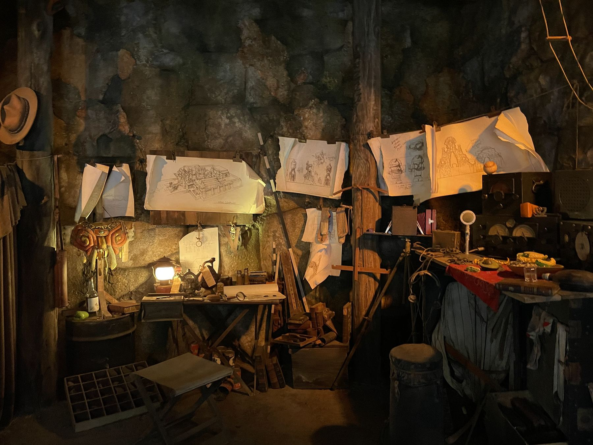
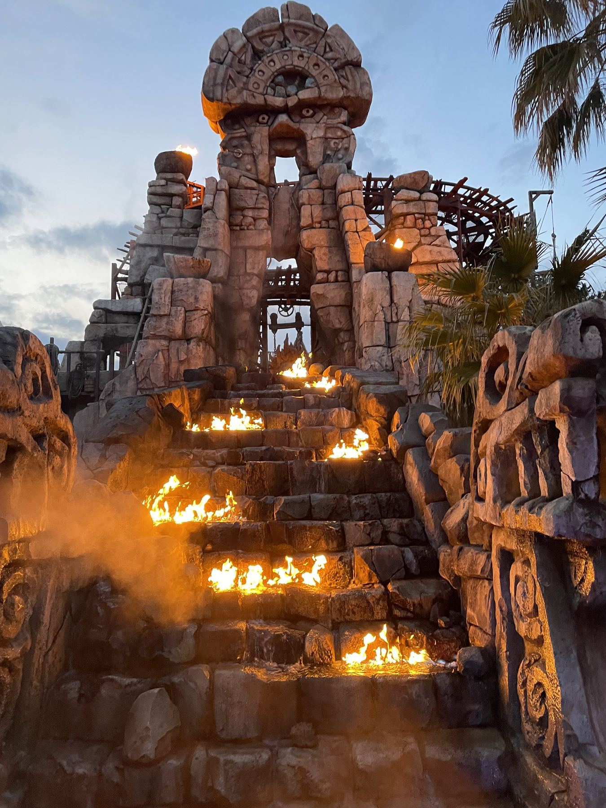
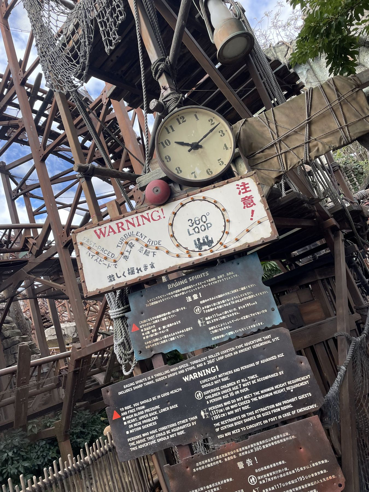

中央アメリカの失われた河のほとり「ロストリバーデルタ」。うっそうと生い茂るジャングルの最奥に、突如として現れる崩壊した古代遺跡の発掘現場、それこそが「レイジングスピリッツ」の舞台です。
アトラクションのキューライン（待ち列）を進むと、ゲストは「放置された考古学者たちの発掘調査キャンプ」を通過します。そこには、ランタンのほの暗い灯りに照らされたテーブルの上に、未完成の遺跡のスケッチ、無線機、そして調査日記が、まるで「つい数分前まで誰かがここにいた」かのような臨場感で遺されています。なぜ、学者たちは命よりも大切な発掘機材をすべて放り出して、この地から一瞬にして逃げ去ってしまったのでしょうか。
東京ディズニーリゾート公式ブログによると、この場所はもともと神をまつる祭祀場でした。やがて文明が失われて遺跡となり、そこへ考古学者や発掘チームが訪れます。チームは残された資料をもとに、発掘とあわせて復元の作業を進めてきました。遺跡が見つかったとき、石像はすでに倒れていて、調べるうちに火の神と水の神の像だと分かったと紹介されています。採石場にはレールが敷かれ、ホッパーカーや道具が集められました。高い場所での復元作業のため、現場にはたくさんのはしごが掛けられています。
東京ディズニーリゾート公式ブログでは、背の高い石像が火の神「イクチュラコアトル」、巨大な蛇の石像が水の神「アクトゥリクトゥリ」と紹介されています。二体の神の名を知ってから現場を見ると、石像や水の演出に込められた物語がより鮮明になります。

公式ブログによると、古代の法典では火の神と水の神の顔を向かい合わせることが禁じられていました。発掘チームが復元作業を進めるなかで、二体の神像が向かい合う状態になり、怒りが爆発したと伝えられています。固有名詞や細かな経緯については、公式記事で確認できる範囲に沿って紹介します。
写真に捉えられている通り、神殿の階段から流れ落ちる「水の上で、本物の火炎が赤々と燃え盛る」という、自然界の理を完全に覆す怪奇現象が発生しました。水は激しく沸き立ち、炎は水面を這い回り、現在もこの不可思議な超自然現象が絶え間なく続いています。この神々の怒りの炎を目撃した調査隊は恐怖の奥底に陥り、キャンプを捨ててジャングルへと逃げ去ってしまったのです。
公式ブログでは、祀られている火の神と水の神は、どちらも気性が荒いと紹介されています。儀式を怠ると火山が噴火し、巨大な嵐が町を襲ったといわれています。古代の法典には、2体の神の顔を向かい合わせることを禁じる決まりがありました。復元作業がほぼ終わったと思われたとき、火の神と水の神が向かい合う形になり、神々の怒りが爆発して大量の蒸気が噴き上がります。法典の決まりに解読チームが気づいたときには、すでに手遅れでした。
東京ディズニーリゾート公式ブログでは、火の神「イクチュラコアトル」は高さ約16m、巨大な蛇の姿をした水の神は「アクトゥリクトゥリ」と紹介されています。
ゲストが乗り込むことになるのは、かつて遺跡の修復や発掘物資を運ぶために、急ごしらえの仮設足場の上に引かれたレールを走る鉱山列車（ホッパーカー）です。しかし、神々の激怒による凄まじい地鳴りとエネルギーは、頑丈なはずの鉄鋼のレールの足場を一瞬にして「グニャリ」と捻じ曲げてしまいました。

その結果、仮設の線路に「1回転（360度垂直ループ）」という、恐るべき超常現象の形が刻み込まれてしまったのです。現在、誰も運転士がいないはずのホッパーカーは、神々の怒りの渦中へ、そして重力を無視して逆さまに回転する垂直ループへと、凄まじいスピードで今もなお走り続けています。私たちは、この呪われた暴走列車に乗り込む、命知らずな体験ツアーの参加者なのです。
公式ブログによると、神々の怒りの力はホッパーカーのレールにも及び、大きなレールが高く持ち上げられたままねじれてしまいました。蒸気が噴き上がったのと同じタイミングで、レールがねじ曲がったとも紹介されています。作業員を乗せたホッパーカーはそのねじれたレールを暴走し、神々の怒りは今も収まっていないとされています。
見どころとしては、背の高い石像がある遺跡をかけめぐること、高い位置からの景色や360度の視界を楽しめることが挙げられています。体験は垂直方向の360度回転だけではない、とも述べられており、「ディズニーシー・トランジットスチーマーライン」の蒸気船が見えることもあるそうです。
レイジングスピリッツの発掘現場には、タワー・オブ・テラーのハリソン・ハイタワー三世につながる手がかりが残されています。
発掘現場の木箱には「HOTEL HIGHTOWER」の表示があり、ホテル・ハイタワーのロビーにある壁画には、ハイタワー三世がロストリバーデルタを探険する姿が描かれています。東京ディズニーリゾート公式ブログも、レイジングスピリッツ付近に置かれたホテル・ハイタワー行きの荷物を「探険の証拠」と紹介しています。木箱と絵画を合わせて見ると、ハイタワー三世とこの発掘現場のつながりは、パーク内に具体的な手がかりが残された物語として読み解けます。
すぐ隣にある「クリスタルスカルの魔宮」を探検しているインディ・ジョーンズ博士は、「歴史を守り、現地の文化や神聖なルールに最大の敬意を払いながら学術的に調査する」という「本物の考古学者」です。一方で、ハイタワー三世は「歴史を略奪し、自分の富を誇示する」という「強欲な略奪者」でした。
同じロストリバーデルタに遺されたふたつの発掘現場は、「歴史への敬意（インディ）」と、「歴史への冒涜（ハイタワー三世）」という、ディズニーシー全体の光と影のメッセージとして描かれているのです。ハイタワーが犯した数々の略奪の罰は、のちに1899年のニューヨークで「シリキ・ウトゥンドゥ」の手によって下されることになります。
最終編集日：